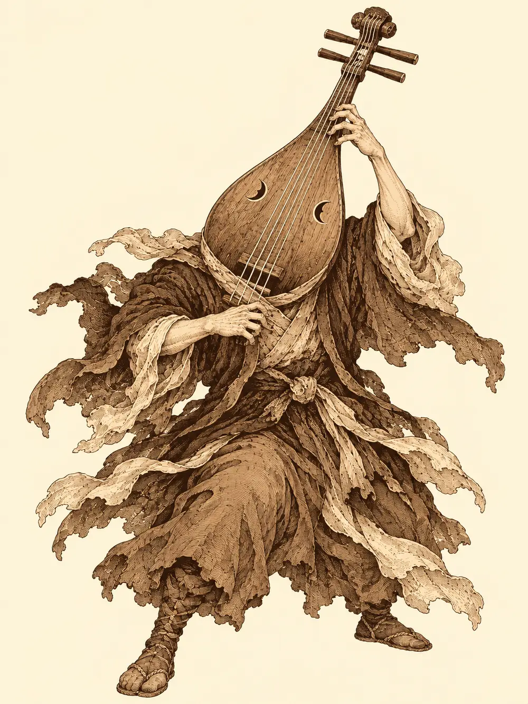

Capítulo 7
Una aldea abandonada
Libro I · Los cazadores de Ukio
El nuevo camarero de Kitaro salió de la cocina con cuatro bandejas en equilibrio y llegó a la mesa de milagro. Era el ronin del bosque, el mismo que había intentado matar a Hayate por confundirlo con un yokai. El tabernero lo llamaba Shiro. Iba sin espada, con un delantal sobre el kimono, y cada vez que dejaba un plato hacía una reverencia.
"Espero que esté a su gusto, señores".
Alguien le pasó media botella de sake como propina. Shiro se la llevó a la cocina, bebiendo por el camino.
Desayunaban caldo de fideos picante, buñuelos rellenos de carne y unos insectos fritos que Tarutaru compartía con su araña. En la chimenea dormía el nekomata. Cuando a alguien se le caía un trozo de comida, una sombra bajaba como un rayo, y el gato seguía allí con los ojos cerrados, masticando.
Un hombre entró corriendo en la taberna, reconoció a los cazadores y fue derecho hacia ellos, jadeando.
"Cazadores, os estaba buscando".
Cuando recuperó el aliento les contó que era leñador, que estaba con sus compañeros cortando madera en el bosque y que al norte habían visto luces y habían oído música. Allí, explicó, estaba el antiguo pueblo de Yayi. Lo habían atacado los yokai hacía más de cien años, y desde entonces no vivía nadie.
"Nosotros cazamos yokai", le dijeron, "pero no nos jugamos la vida gratis".
El leñador sacó una bolsa pequeña, metió la mano y la volvió a sacar casi vacía. Hablaría con sus compañeros, prometió. Reuniría algo. Alguien le pidió que se cortara un dedo como garantía, y el hombre, pálido, se apresuró a jurar que pagarían. Los acompañaría hasta el lugar donde había visto las luces, pero ni un paso más.
Compraron pociones y salieron con el leñador hacia el norte por un camino tranquilo. Cuando el hombre se detuvo y señaló entre los árboles, Hino Yama cerró los ojos, murmuró unas palabras, y sobre su brazo se posó un búho de plumas pardas y ojos redondos. Lo llamaba Ernesto.
El búho voló entre las ramas y volvió al cabo de un rato. Se le posó en el hombro y el mago escuchó lo que le contaba sin palabras, dentro de la cabeza: había un claro más adelante, con más luz que el resto del bosque, y en él una aldea con gente haciendo vida normal.
"Bueno", dijo el leñador, "yo hasta aquí llego", y se marchó por donde habían venido.
La luz fue creciendo entre los troncos y, con ella, llegaron los olores. Pan recién hecho. Comida al fuego. Ruido de vasos y de risas. Entre la niebla se dibujaron las casas, de madera, con sus aleros y sus faroles, y gente que iba y venía con ropa sencilla de aldea. Un hombre llenaba cubos en una fuente de piedra, en mitad de una plaza. Era mediodía y el sol entraba a raudales.
Y sobre todo aquello flotaba una melodía. Suave, insistente, siempre la misma, como si alguien estuviera tocando un instrumento de cuerda en algún sitio que no se veía.
Hino Yama la escuchó con atención y algo en ella le erizó las escamas: aquella música no era solo música. Llevaba magia dentro, aunque no supo decir de qué clase. Mandó a Ernesto a buscar su origen. El búho voló entre los tejados y el mago lo fue siguiendo a través de sus ojos, la gente por las calles, el olor de una panadería, la fuente, y de pronto nada. Se había ido. No volvió.
Shiru había olido el pan y ya no pensaba en otra cosa. En la panadería, un hombre enharinado lo recibió con los brazos abiertos.
"¡Un cliente extranjero! Bienvenido, bienvenido".
Le dio a probar un pedazo. Shiru lo masticó despacio, buscando algún regusto a hechizo. Estaba buenísimo. Sacó veinte monedas de oro y las puso en el mostrador, y el panadero le envolvió en una sábana cinco hogazas enormes, redondas, de corteza dura. El cervan salió a la calle comiéndose una con la sonrisa de quien acaba de encontrar la paz.
Los demás, mientras tanto, siguieron la ruta que había hecho el búho y, en una esquina, encontraron un par de plumas pardas en el suelo. Nada más. Hino Yama acabaría entendiendo que alguien había atrapado a Ernesto para comérselo, y que el búho, que no era más que magia con forma de pájaro, se había deshecho entre sus manos.
La música seguía sonando. Un hombre volvía de recoger bayas con la cesta llena y se los quedó mirando con desconfianza.
"¿Y vosotros de dónde habéis salido?".
"Estamos siguiendo esta melodía tan bonita".
"¿Qué melodía? Aquí nunca hemos oído música".
Les dijo que había nacido allí, en Yayi, y siguió su camino mirándolos por encima del hombro.
Lo extraño era que la música cambiaba de sitio: la oían detrás de una valla, luego a la espalda, luego a la derecha. Solo Tarutaru, concentrada, con los ojos entornados, consiguió atraparla y no soltarla. Venía de la plaza, y de la plaza los llevó hasta la puerta de una taberna con un cartel que decía La Mangosta Borracha.
El tabernero los recibió como a viejos amigos y les puso sake en la barra. En una mesa había clientes jugando; una mujer y un hombre bebían juntos y los miraban con curiosidad. Tarutaru pidió el baño y volvió diciendo que la música sonaba ahí mismo, en el salón, como si alguien estuviera tocando entre ellos.
Shiru, con el sake subiéndole a la cabeza, se plantó junto a la mesa del hombre y la mujer.
"¿Quién quiere un pulso?".
La mujer animó al hombre y puso unas monedas sobre la mesa. Shiru le tumbó el brazo sin despeinarse, y la mujer, riéndose, le pasó diez monedas de oro y le sirvió más sake. Mientras tanto, la araña de Tarutaru se colaba por debajo de la puerta de la cocina. Dentro había cajas, comida en las repisas, una cocina pequeña de taberna pequeña. Nada más.
Todo era agradable. Demasiado. El pan, la música, el sake, las monedas que regalaban.
Fuera empezó a oscurecer, y las calles se vaciaron. La música siguió sonando, pero algo en ella había cambiado; ahora era más dura, más rápida, casi agresiva. Hayate se dio cuenta antes que nadie. El hombre que un rato antes se reía jugando al pulso estaba hundido en su silla, con la mirada perdida, y los demás clientes igual. Abrió la puerta para mirar la calle y la música le golpeó la cara, mucho más alta que dentro, como si la noche entera estuviera tocando. Dos aldeanos pasaron por delante caminando en línea recta, despacio, sin mirar a ningún sitio.
Hino Yama se levantó de la barra para reunirse con sus compañeros, echó un último vistazo al hombre con el que había estado hablando y se quedó helado.
La cara del hombre se estaba borrando. Los ojos, la nariz, la boca, todo se iba hundiendo y alisando, como cera al calor, hasta que no quedó más que una superficie de piel lisa. Al tabernero le estaba pasando lo mismo. Detrás de ellos se oyó un crujido. La mujer se había quedado muy quieta y el cuello se le empezó a estirar, vértebra a vértebra, un palmo, dos, tres, mientras la cabeza se elevaba y avanzaba por el aire hacia Hino Yama hasta quedar a un dedo de su cara.
Nadie respondió a las preguntas del mago. Los dos hombres sin rostro se volvieron hacia los cazadores, sin ojos con que mirarlos.
La mujer abrió la boca y chilló. El mago, por puro reflejo, le tiró el sake a la cara.
La araña fue la primera en lanzarse. Shiru agarró una silla y la hizo astillas contra uno de los hombres sin cara, y cuando la criatura intentó agarrarlo, le arrancó una pata a una mesa, la levantó entera y se la reventó contra el pecho.

"¡Toma, por intentar agarrarme!".
Hino Yama soltó sobre la mujer un rayo de fuego, y el sake que le empapaba el cuello prendió de golpe; la llama corrió por aquella garganta larga como por una mecha. Hayate inmovilizó al otro hombre sin rostro desde lejos, pero la criatura soltó un grito sin boca, un sonido que no debería haber existido, y a varios de ellos se les heló la sangre. Les temblaban las manos. La araña le mordió la cara lisa y Shiru, con la cornamenta por delante, cruzó la sala a la carrera y lo empotró contra la pared.
Cuando los tres estuvieron muertos, ocurrió algo que ninguno esperaba. El cuello de la mujer se recogió, despacio, hasta volver a su sitio. A los hombres les volvieron las caras, primero los ojos, después la nariz, la boca. Tres personas normales, quemadas y rotas en el suelo de una taberna.
Shiru se limpió la sangre de la cara, sacó otra hogaza de la sábana y siguió comiendo, porque no sabía qué otra cosa hacer. Registraron los cuerpos, cogieron de la cocina comida y botellas de sake, que podían servir para prender a otros como aquella mujer, y salieron a la plaza.
Había más. Un hombre sin cara, otra mujer con el cuello largo, figuras que deambulaban como sonámbulas sin fijarse en nada. Tarutaru cerró los ojos y escuchó: la música salía de detrás de la fuente. Hayate se elevó un poco y vio a alguien sentado de espaldas, tocando un instrumento grande con una postura extraña.
Hino Yama no esperó más. Soltó tres saetas de luz que cruzaron la plaza y se clavaron en la espalda del músico.
El hombre se giró. Tenía cuerpo de hombre, manos de hombre. En lugar de cabeza, sobre los hombros, tenía un laúd enorme, con el mástil hacia arriba y las cuerdas tensas. Se tocaba a sí mismo.
Cambió la melodía, y todas las criaturas de la plaza se volvieron hacia ellos.
Hayate disparó una flecha, y otra, y otra, y todas entraron. El músico se tambaleó, pero no dejó de tocar. La araña corrió hacia uno de los hombres sin rostro y le saltó encima. El hombre no podía verla, pero la sintió. Tanteó con una daga en la dirección del mordisco, y la daga encontró algo pequeño y blando. La araña de Tarutaru quedó atravesada, con las patas encogidas.
La drow soltó un grito ahogado.
Una de las mujeres de cuello largo lanzó la cabeza como un látigo hacia Hino Yama, una y otra vez, y el escudo invisible del mago detuvo cada mordisco. Shiru le arrojó un tonel al músico, que encajó el golpe y siguió tocando. Luego se acercó. Se detuvo a pocos pasos de ellos y arrancó un acorde que no era música.
Fue como un trueno dentro de los oídos. Incluso los aldeanos transformados que estaban cerca se doblaron de dolor. Hayate perdió el hilo de su puntería, como si se le hubiera escapado de las manos una cuerda invisible.
Tarutaru se adelantó con su espada. Atravesó la distancia que la separaba del músico, cortó las cuerdas de un tajo, y los dedos del hombre saltaron por el aire con ellas. Después agarró el laúd por el mástil y tiró. La cabeza salió entera, chorreando sangre, y el cuerpo se quedó un instante de pie antes de desplomarse.
La música se detuvo.
Por toda la plaza las criaturas empezaron a convulsionar, dobladas de formas imposibles, y poco a poco fueron recuperando sus formas. Caras. Cuellos normales. Cayeron al suelo y se quedaron allí, respirando. Dormidos, vivos.
Entre las pertenencias del músico encontraron un cuaderno lleno de canciones y, entre ellas, algunas páginas de diario. El hombre contaba que había llegado a aquel pueblo a tocar y que nadie le hacía caso. Le insultaban. Le decían que su música no valía nada. Hasta que un día encontró un laúd nuevo, maravilloso, y cuando empezó a tocarlo la gente se detenía, lo escuchaba, volvía al día siguiente. Luego venían las anotaciones extrañas. Algunos hombres parecían haber perdido la cara. Había visto a una mujer con el cuello alargado. No sabía qué estaba pasando. Las palabras se iban espaciando, y en las últimas páginas ya no había palabras. Solo notas, pentagramas, compases que nadie se atrevió a tararear.
No decía de dónde había salido el laúd.
Alguien despertó a una mujer que dormía en el suelo de su casa, y ella les gritó que salieran de allí. Le preguntaron en qué año creía que estaban. Nombró uno que había quedado atrás hacía un siglo. Cuando le contaron la verdad, que llevaban cien años en trance bailando al son de un músico, la mujer miró detrás de ellos, vio el cuerpo sin cabeza en la plaza y a la drow con un laúd ensangrentado en la mano, y les cerró la puerta en las narices.
Durmieron en una casa que creían vacía. Al amanecer los echó de allí a bastonazos el dueño, que no creyó una palabra de lo que le contaron.
En la plaza se fue juntando gente. Miraban el cadáver sin cabeza y las puertas rotas de la taberna, y luego miraban a los extranjeros. Shiru se subió al borde de la fuente y los llamó a todos. Les contó lo que había pasado con toda la paciencia de la que era capaz.
"¿No os dais cuenta de cómo están vuestras casas? Vivís en el bosque. ¿No veis lo podrida que está la madera? ¿No veis lo gordos que son los árboles?".
Los vecinos se volvieron hacia sus casas. Tocaron las vigas, que se deshacían bajo los dedos. Miraron los troncos que rodeaban el claro como si no los hubieran visto nunca. Algunos les dieron las gracias con reverencias largas. Otros se fueron a revisar lo que quedaba de sus cosas.
Volvieron a Ukio con el cuerpo de la araña envuelto en un trapo. Tarutaru lo dejó sobre la mesa de la taberna y se quedó mirándolo, sin ganas de comer.
El nekomata la observaba desde la chimenea. Al cabo de un rato bajó con mucha parsimonia, luciendo las dos colas, se subió a la mesa y empujó a la araña con una pata, como a un ovillo. Miró a la drow y maulló algo en silvano.
"Pregunta si era amiga tuya", tradujo Hayate.
Tarutaru asintió. El gato levantó la zarpa y sacó las uñas, y a su alrededor se encendió un resplandor morado, el mismo con que una vez había sacado a los muertos de sus tumbas en el patio de los pescadores. La araña se estremeció. Movió una pata, luego otra, y se puso en pie. No era del todo la misma; tenía algo apagado y rígido en los movimientos, el andar de lo que ya no está vivo. Pero había vuelto.
Tarutaru acarició al gato largo rato, y luego el nekomata señaló con la pata el pescado que había en la mesa. Se lo dieron todo, y se lo llevó a la chimenea con los carrillos llenos.
El leñador apareció por la tarde, preocupado porque llevaban un día fuera. Le contaron lo del músico y su laúd, lo de los cien años, lo de los vecinos que no se lo creían. Escuchó con la boca abierta y les dio veinticinco monedas de oro a cada uno.
"Hablaré con el alcalde", prometió. "Mandaremos a alguien a Yayi".
Se fue haciendo reverencias. Alguno dijo entonces, medio en broma, que La Mangosta Borracha se había quedado sin tabernero, y que no estaría mal volver un día a ver qué se podía hacer con ella. Sobre la mesa, la araña de Tarutaru se limpiaba las patas delanteras con unos movimientos lentos, demasiado lentos, mientras el gato roncaba junto al fuego.